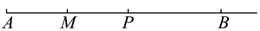
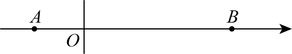
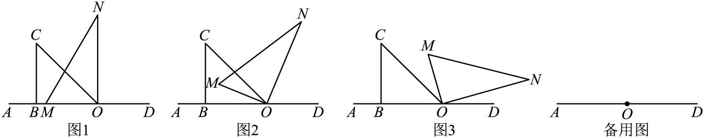
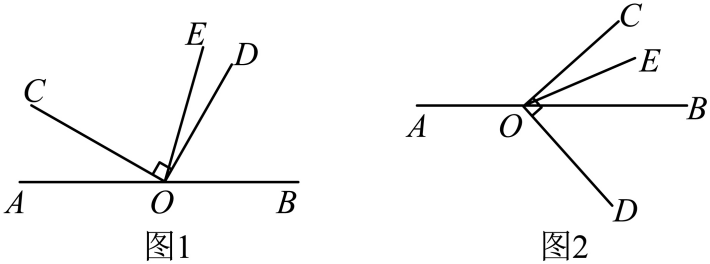
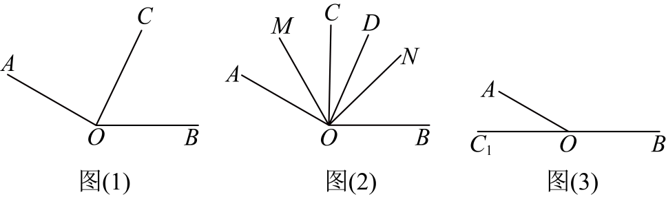
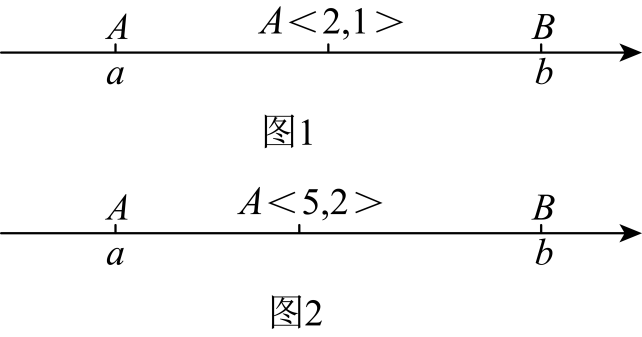
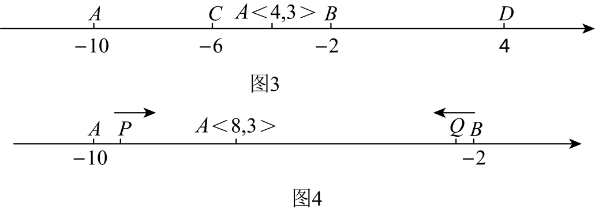

专题01 几何图形中的动点与动角探究问题（举一反三专项训练）
【北师大版2024】

【题型1 线段上的动点求时间问题】 1
【题型2 线段上的动点定值问题】 11
【题型3 几何图形中动角定值问题】 18
【题型4 几何图形中动角数量关系问题】 29
【题型5 几何图形中动角求运动时间问题】 37
【题型6 几何图形中动角求角度问题】 47
【题型7 线段与角中动态新定义问题】 57
【题型8 线段与角中动态多解问题】 66

【题型1 线段上的动点求时间问题】
【例1】（24-25七年级上·吉林·期末）如图，线段AB=24，动点P从A出发，以每秒2个单位的速度沿射线AB运动，运动时间为t秒t>0，M为AP的中点．

(1)用含t的代数式表示PB的长度为_____．
(2)在点P运动的过程中，当t为多少时，PB=12AM？
(3)在点P运动的过程中，点N为BP的中点，证明线段MN的长度不变，并求出其值．
(4)当点P在AB延长线上运动时，当M、N、B三点中的一个点是以另两个点为端点的线段中点时，直接写出t值．
【变式1-1】已知线段AD=60，点B、点C都是AD线段上的点．

(1)如图1，若点M为AB的中点，点N为BD的中点，则线段MN长为 ；
(2)若BC=10，点E是线段AC的中点，点F是线段BD的中点，请自己作图并求EF的长；
(3)如图2，若AB=5，BC=10，点P，Q分别从B、C出发向点D运动，运动速度分别为每秒移动1个单位和每秒移动4个单位，设运动时间为t秒，点E为AQ的中点，点F为PD的中点，若PE=QF，求t的值．
【变式1-2】如图1，已知直线l上线段AB=6，线段CD=2（点A在点B的左侧，点C在点D的右侧），BD=15．

(1)求图1中所有线段的条数为______条：
(2)若线段AB从点B开始以2个单位/秒的速度向右运动，同时线段CD从点D开始以1个单位/秒的速度向左运动，当时间t在什么范围内，线段CD所有的点都在线段AB上？（含端点）
(3)若线段AB从点B开始以2个单位/秒的速度一直向右运动，同时，线段CD从点C开始以1个单位/秒的速度向右运动，当端点B与D初次相遇时，线段DC立即以原来速度的2倍向左运动，当端点C与端点A初次相遇时，线段CD的速度变为初始速度的12方向继续向左，问在整个运动过程中，时间t为何值时AC=1．
【变式1-3】点C是线段AB上一点，若AC=nBC（n为大于1的正整数），则我们称点C是(B,A)的最强CP点．例如，AB=10，AC=CD=DE=EB=2，则AE=3BE，称E是(B,A)的最强CP点；BD=2CD，则D是(C,B)的最强CP点．
(1)点C在线段AB上，若AB=14，n=4，点C是(B,A)的最强CP点，则AC= ．
(2)若AB=14，C是(B,A)的最强CP点，则AC= ．（用n的代数式表示）
(3)一直线上有两点A，B，AB=30cm，点C从B点出发，以每秒3cm的速度向A运动，运动到点A时停止．点D从点A出发，以每秒5cm的速度沿射线AB运动，t为多少时，点B，C，D恰好有一个点是其余2个点的最强CP点．（用n的代数式表示）
【题型2 线段上的动点定值问题】
【例2】（24-25七年级上·湖北武汉·期末）如图，点A，B，C，D是同一直线上从左到右依次排列的四点，AB=a，CD=b，且a，b满足：a−6+b−32=0，BC=15．

(1)a= ，b= ；
(2)线段AB以2个单位长度/秒的速度向右匀速运动，同时线段CD以1个单位长度/秒的速度向左匀速运动．
①求运动多少秒时，线段AB，CD重合的长度为2；
②当点B和C重合时，线段CD立即以原来2.5倍的速度向右运动，线段AB的运动状态不变，若线段CD向右运动过程中，式子2AC+mBD的值为定值n，请求m和n的值．
【变式2-1】如图，在数轴上的A点表示数a，B点表示数b，a、b满足a+22+b−5=0

(1)点A表示的数为____________，点B表示的数为______________.
(2)若在原点O处放一挡板，一小球甲从点A 处以2个单位/秒的速度向左运动；同时另一小球乙从点B处以3个单位/秒的速度也向左运动，在碰到挡板后（忽略球的大小，可看作一点）以原来的速度向相反的方向运动，设运动的时间为t（秒）．
①当t=1时，乙小球到原点的距离=__________________；
当t=3时，乙小球到原点的距离=__________________．
②试探究：甲、乙两小球到原点的距离可能相等吗？若不能，请说明理由；若能，请计算说明．
(3)现将小球乙看成动点P，当点P运动到线段OB上时，分别取OB和AP的中点E,F，试判断AB−OPEF的值是否为定值，若不是，请说明理由；若是，请求出该定值．
【变式2-2】（25-26七年级上·湖南衡阳·阶段练习）【知识准备】
①若点C在线段AB上，且把线段AB分成相等的两段，则称点C为线段AB的中点，也叫二等分点，若点P，点Q在线段DE上，且把线段DE分成相等的三段，则称点P和点Q为线段DE的三等分点；
②若数轴上点A对应的数为x，点B对应的数为y，M为AB的中点，则我们有中点公式：点M对应的数为x+y2．
（1）在一条数轴上，0为原点，点C对应的数为5，点D与点C的距离为7个单位长度，且位于点C左侧，则CD的中点N所对应的数为_______________；
【问题探究】
（2）在（1）的条件下，若点P从点C出发，以每秒1个单位长度的速度向左运动，同时点Q从点D出发，以每秒2个单位长度的速度向右运动．设运动时间为t秒，t为何值时，PQ的中点所对应的数为10？
【拓展延伸】
（3）若数轴上点A对应的数为x，点B对应的数为y，M为AB靠近点A的三等分点，则我们有三等分点公式：点M对应的数为2x+y3：若数轴上点A的对应数为x，点B的对应数为y，M为AB最靠近点A的四等分点，则我们有四等分点公式：点M对应的数为：3x+y4．
①填空：若数轴上点A的对应数为x，点B的对应数为y，M为AB最靠近点B的五等分点．则点M对应的数为_______________________．
②在（2）的条件下，若E是PQ最靠近Q的五等分点，F为PC的中点，则是否存在t，使得57OE+2OF为定值？若存在，请求出t的取值范围和此时的定值．若不存在，说明理由．
【变式2-3】（25-26七年级上·陕西宝鸡·阶段练习）【知识准备】
若数轴上点A对应的数为x，点B对应的数为y，M为AB的中点，则我们有中点公式：点M对应的数为x+y2．
（1）在一条数轴上，O为原点，点C对应的数为c，点D对应的数为d，且有c−3+d+(d+2)2=0，则CD的中点N所对应的数为_______．
【问题探究】
（2）在（1）的条件下，若点P从点C出发，以每秒1个单位长度的速度向左运动，同时点Q从点D出发，以每秒2个单位长度的速度向右运动，设运动时间为ts，t为何值时，PQ的中点所对应的数为10？
【拓展延伸】
（3） 若数轴上点A对应的数为x，点B对应的数为y，M为AB靠近点A的三等分点，则我们有三等分点公式；点M对应的数为2x+y3；若数轴上点A的对应数为x；点B的对应数为y，M为AB最靠近点A的四等分点，则我们有四等分点公式；点M对应的数为3x+y4．
①填空：若数轴上点A的对应数为x；点 B的对应数为y，M为AB最靠近点B的五等分点．则点M对应的数为________．
②在（2）的条件下，若E是PQ最靠近Q的五等分点，F为PC的中点，则是否存在t，使得57OE+2OF为定值？若存在，请求出t的取值范围和此时的值，若不存在，说明理由．
【题型3 几何图形中动角定值问题】
【例3】（24-25七年级上·海南三亚·期末）如图1，三亚市某学校大课间的广播操展示让我们充分体会到了一种整体的图形之美，洋洋和乐乐想从数学角度分析下如何能让班级同学们的广播操做的更好，他们搜集了标准广播操图片进行讨论，如图2，为方便研究，定义两手手心位置分别为A、B两点，两脚脚跟位置分别为C、D两点，定义A、B、C、D平面内O为定点，将手脚运动看作绕点O进行旋转．

(1)如图2，A、O、B三点共线，点C、D重合，∠AOC=∠BOC，则∠AOC=______°；
(2)如图3，A、O、B三点共线，且∠AOC:∠BOC=3:2，DO平分∠BOC，求∠BOC，∠AOD的大小；
(3)第三节腿部运动中，如图4，洋洋发现，虽然A、O、B三点共线，却不在水平方向上，且∠AOD:∠BOC=3:2，他经过计算发现，∠AOC−23∠BOD的值为定值，请写出这个定值为______；
(4)第四节体侧运动中，如图5，乐乐发现，两腿左右等距张开，使竖直方向的射线OE平分∠COD，且∠COD=30°，开始运动前A、O、B三点在同一水平线上，OA、OB绕点O顺时针旋转，OA旋转速度为每秒50°，OB旋转速度为每秒25°，当OB旋转到与OD重合时运动停止（OE是竖直方向的一条射线）
①运动停止时，∠AOD= ；
②请帮助乐乐写出运动过程中∠AOC与∠BOE的数量关系
【变式3-1】（24-25七年级上·四川成都·期末）已知∠AOB=90°．

(1)如图1，若射线ON，OM分别为∠AOC，∠BOC的角平分线，则∠MON= ．
(2)如图2，射线OC从OA出发绕点O以每秒20°的速度沿逆时针方向旋转，射线OD从OA出发绕点O以每秒10°的速度沿顺时针方向旋转，设运动时间为t，且OM平分∠BOC．
①当0<t<4.5时，若ON分∠AOC为1:3两个部分，求满足∠DON=12∠MON时，t的值．
②如图3，若OP平分∠AOD，当0<t<6且t≠4.5时，试判断2∠MOP−∠COD是否为定值．若是，请求出该定值；若不是，请说明理由．
【变式3-2】（24-25七年级上·四川成都·阶段练习）小七同学最近在研究平面中的角，他发现各角通过运动会产生很多新的结论，于是他用几何画板制作了一道关于角的动态问题，如图1，平面上顺时针排列射线OA,OB,OC,OD,∠BOC=90°，∠AOD在∠BOC外部且为钝角，∠AOB:∠COD=7:8，射线OM,ON分别平分∠AOC,∠AOD（题目中所出现的角均小于180°且大于0°）．请用学过的知识帮他求解以下问题．

(1)若∠AOD=120°，∠AOM= ，∠CON= ；
(2)7∠CON−∠AOM的值是否随着∠AOD的变化而变化？若不变，求出该定值；若要变，请说明理由；
(3)在（1）的条件下，将∠AOB绕点O以每秒2°的速度顺时针旋转得到∠A1OB1（OA,OB的对应边分别是OA1,OB1），若旋转时间为t秒（0<t<180），当∠A1OC+6°=∠B1OD时，求出t的值．
【变式3-3】如图，把一副三角尺拼在一起，其中三角形ABC是等腰直角三角形，∠BCA=90°，并且B，C，E三点在同一直线上．
(1)如图1，求∠BAD的度数；
(2)如图2，若射线CB′，CA′分别从CB，CA位置开始，同时绕点C以每秒5°的速度顺时针匀速旋转180°，CF平分∠A′CB0°<∠A′CB<180°，CG平分∠B′CE0°<∠B′CE<180°，设旋转的时间为t秒．
①当0<t<18时，∠FCG的度数是否等于一个定值？若是，请求出这个定值；若不是，请说明理由；
②当t为何值时，∠B′CF=2∠GCA′？
【题型4 几何图形中动角数量关系问题】
【例4】将一副直角三角板按如图1摆放在直线AD上（直角三角板OBC和直角三角板MON，∠OBC=90°，∠BOC=45°，∠MON=90°，∠MNO=30°），保持三角板OBC不动，将三角板MON绕点O以每秒6°的速度顺时针方向旋转t秒．

(1)如图2，当t= 秒时，OM平分∠AOC，此时∠NOC−∠AOM= ；
(2)继续旋转三角板MON，如图3，使得OM、ON同时在直线OC的右侧，猜想∠NOC与∠AOM有怎样的数量关系？并说明理由（数量关系中不能含t）；
(3)直线AD的位置不变，若在三角板MON开始顺时针旋转的同时，另一个三角板OBC也绕点O以每秒2°的速度顺时针旋转，当OM旋转至射线OD上时，两个三角板同时停止运动．
①当t= 秒时，∠MOC=15°；
②请直接写出在旋转过程中，∠NOC与∠AOM的数量关系（数量关系中不能含t）．
【变式4-1】（24-25七年级上·浙江杭州·阶段练习）已知O是直线AB上的一点，∠COD是直角，OE平分∠BOC．
【猜想】
如图1，当∠COD的两边在直线AB同侧时，小明通过实验测量得到∠AOC与∠DOE的相关数量，如下表：求∠DOE与∠AOC的数量关系．
【探究】
小明将图1中的∠DOC绕顶点O顺时针旋转至图2的位置．探究∠AOC和∠DOE的数量关系是否符合【猜想】中的结论，并说明理由．
【拓展】
将图1中∠COD的边OC与OA重合的位置开始，绕顶点O顺时针旋转，旋转的速度为每秒9度，旋转时间t秒(0<t<20)，OF为∠COD的角平分线，当∠EOF=30°时，求t的值．
∠AOC | 90° | 60° | 50° | 30° |
∠DOE | 45° | 30° | 25° | 15° |

【变式4-2】（24-25七年级上·湖南常德·期末）如图，已知∠AOB=120°．

(1)OC，OD是以O为顶点的两条射线，OM，ON分别平分∠AOC，∠BOD．
①如图1，当∠COD=50°，∠BOD=40°时，∠MON的度数为_______；
②如图2，当0<∠BOD<60°时，请写出∠AOD、∠BOC与∠MON之间的数量关系，并说明理由；
(2)如图3，当∠COD=50°时，∠AOC以4.5度/秒的速度整体绕点O顺时针旋转，同时，∠BOD也以2度/秒的速度整体绕点O顺时针旋转，当∠BOD刚好旋转一周时，两个角都停止旋转，求旋转过程中∠AOC与∠BOD有重叠部分的总时长．
【变式4-3】如图，直线AB与直线CD相交于点O，∠AOC=60°． 已知∠MON=60°，∠MON绕点O在平面内旋转，旋转前，边OM与射线OB重合，边ON与射线OD重合． 将∠MON绕点O按每秒12°的速度沿顺时针方向旋转一周．

(1)如图1，从∠MON旋转开始至ON边与射线OC重合时，共需多少秒？
(2)∠MON旋转至如图2所示位置时，试说明∠CON与∠AOM有何数量关系，并说明理由；
(3)如图3，已知∠POQ=60°，∠POQ绕点O在平面内旋转，旋转前，边OP与射线OC重合，边OQ与射线OA重合． 若在∠MON旋转过程中，∠POQ绕点O以每秒3°的速度绕点O沿逆时针方向旋转，当∠MON停止旋转时，∠POQ也停止旋转，旋转过程中，当边ON所在直线恰好平分锐角∠POQ时，求出旋转时间．
【题型5 几何图形中动角求运动时间问题】
【例5】如图1，点O是直线AB上一点，将一个直角三角形板∠MON=90°如图1放置，使其中一条直角边ON在直线AB上，射线OC在∠BOM内部．

(1)如图2，将三角板绕点O逆时针旋转，当∠BON=∠CON时，请判断OM是否平分∠AOC，并说明理由；
(2)若∠BOC=40°，将三角板绕点O逆时针旋转，每秒旋转1°．
①多少秒时∠AOM=∠COM？
②如图3，当ON在∠AOC内部，另一边OM在直线AB的另一侧，请探索∠AOM与∠CON的数量关系，并说明理由．
【变式5-1】已知：如图1，点A、O、B依次在直线MN上，现将射线OA绕点O沿顺时针方向以每秒2°的速度旋转，同时射线OB绕点O沿逆时针方向以每秒4°的速度旋转，如图2，设旋转时间为t秒(0≤t≤90)．
(1)用含t的代数式表示∠MOA，其结果是：∠MOA=______(度)．
(2)在运动过程中，当∠AOB=60°时，求t的值．
(3)在旋转过程中是否存在这样的t，使得射线OB是由射线OM、射线OA所组成的角(指大于0°而不超过180°的角)的平分线？如果存在，请计算出的值；如果不存在，请说明理由．
【变式5-2】定义：从一个角的顶点出发，在角的内部引两条射线，如果原角是这两条射线所成的角的n倍，那么原角叫做这两条射线所成的角的n倍角．如图1，若∠AOB=2∠COD，则∠AOB是∠COD的两倍角．

(1)如图1：已知∠AOB=70°，∠AOC=25°，∠AOB是∠COD的两倍角，则∠BOD=___________；
(2)如图2：已知∠AOB=75°，将∠AOB绕点O按顺时针方向旋转一个角度α0<α<75°至∠COD，当旋转的角度α为何值时，∠AOD是∠COB的三倍角．
(3)已知∠AOB=30°，把一块含有30°角的三角板如图3叠放，将三角板绕顶点O以2度/秒的速度按顺时针方向旋转（如图4）．问：在旋转一周的过程中，射线OA，OB，OC，OD能否构成三倍角？若能，请求出旋转的时间：若不能，请说明理由．
【变式5-3】（24-25七年级上·陕西西安·阶段练习）已知∠AOB=150°，OD为∠AOB内部的一条射线．

(1)如图（1），若∠BOC=60°，OD为∠AOB内部的一条射线，∠COD=13∠BOC，OE平分∠AOB，求∠DOE的度数．
(2)如图（2），若OC、OD是∠AOB内部的两条射线，OM、ON分别平分∠AOD，∠BOC，且∠MOC≠∠NOD，求∠AOC−∠BOD∠MOC−∠NOD的值．
(3)如图（3），C1为射线OB的反向延长线上一点，将射线OB绕点O顺时针以6°/s的速度旋转，旋转后OB对应射线为OB1，旋转时间为t秒（0<t≤35），OE平分∠AOB1，OF为∠C1OB1的三等分线，∠C1OF=13∠C1OB1，若∠C1OF−∠AOE=30°，求t的值．
【题型6 几何图形中动角求角度问题】
【例6】（24-25七年级上·天津·期末）已知∠AOB=90°，∠COD=60°，按如图1所示摆放，将OA、OC边重合在直线MN上，OB、OD边在直线MN的两侧：
(1)如图1，作射线OE平分∠AOB，射线OF平分∠COD，补全图形，并求出∠EOF的度数．
(2)保持∠AOB不动，将∠COD绕点O旋转至如图2所示的位置，则
①∠AOC+∠BOD=___________°（度）（直接写答案）
②∠BOC−∠AOD=___________°（度）（直接写答案）
(3)若∠COD按每分钟5°的速度绕点O逆时针方向旋转，∠AOB按每分钟2°的速度也绕点O逆时针方向旋转，OC旋转到射线ON上时都停止运动，设旋转t分钟，计算∠MOC−∠AOD．请画出图形并直接写出对应的结果（用含t的代数式表示）．
【变式6-1】已知，OC是过点O的一条射线，OD，OE分别平分∠AOC，∠BOC．

(1)如图①，如果射线OC在∠AOB的内部，∠AOB=80°，则∠DOE= °；
(2)如图②，如果射线OC在∠AOB的内部绕点O旋转，∠AOB=x°，则∠DOE= °；
(3)如果射线OC在∠AOB的外部绕点O旋转，∠AOB=x°，请借助图③探究∠DOE的度数．
【变式6-2】点O是直线AB上的一点，射线OC从OA出发绕点O顺时针方向旋转，旋转到OB停止，设∠AOC=α0°≤α≤180°，射线OD⊥OC，作射线OE平分∠BOD．

(1)如图1，若α=40°，且OD在直线AB的上方，求∠DOE的度数．
(2)射线OC顺时针旋转一定的角度得到图2，当射线OD在直线AB的下方时，其他条件不变，请你用含α的代数式表示∠DOE的度数．
(3)射线OC从OA出发绕点O顺时针方向旋转到OB，在旋转过程中你发现∠DOE与∠AOC（0°≤∠AOC≤180°，0°≤∠DOB≤180°）之间有怎样的数量关系？请你直接用含α的代数式表示∠DOE的度数．
【变式6-3】（24-25七年级上·重庆·阶段练习）如图1，点O为直线AB上一点，过点O作射线OC、OM、ON．ON始终在OM的右侧，∠BOC=120°，∠MON=a．
(1)如图1，当a=65°．OM平分∠BOC时，求∠NOB的度数：
(2)如图2、当OM与OB边重合，ON在OB的下方时，α=74°，将∠MON绕O点按每秒4°的速度沿逆时针方向旋转α0°<α<180°、使射线ON与∠BOC的角平分线形成夹角为30°，求此时旋转一共用了多少秒：
(3)当∠MON在直线AB上方时，若a=75°，点F在射线OB上，射线OF绕点O顺时针旋转n度0°<n<180°，恰好使得∠FOA=2∠AOM，OH平分∠NOC，∠FOH=130°，请直接写出此时n的值．
【题型7 线段与角中动态多解问题】
【例7】一副三角板ABC、DBE，如图1放置，（∠D=30°、∠BAC=45°），将三角板DBE绕点B逆时针旋转一定角度，如图2所示，且0°<∠CBE<90°，有下列四个结论：

①在图1的情况下，在∠DBC内作∠DBF=∠EBF，则BA平分∠DBF；
②在旋转过程中，若BM平分∠DBA，BN平分∠EBC，∠MBN的角度恒为定值；
③在旋转过程中，两块三角板的边所在直线夹角成90°的次数为3次；
④∠DBC+∠ABE的角度恒为105°．
其中正确的结论个数为（ ）
A．1个 B．2个 C．3个 D．4个
【变式7-1】如图，已知 A，B（B在A的左侧）是数轴上的两点，点A对应的数为8，且AB=12，动点P从点A出发，以每秒2个单位长度的速度沿数轴向左运动，在点P的运动过程中，M，N始终为 AP，BP的中点，设运动时间为t（t>0）秒，则下列结论中正确的有（ ）
①点B对应的数是4；②点P到达点B时，t=6；③BP=2时，t=5；④在点P的运动过程中，线段MN的长度不变
A．4个 B．3个 C．2个 D．1个
【变式7-2】（24-25七年级上·湖北武汉·期末）如图所示，已知∠COD=α，∠AOB=β，α+β=180°，且0<α<90°<β<180°．①图中小于平角的角共有6个；②图中所有小于平角的角之和为3β+α；③当∠COD绕点O旋转一周，OE平分∠AOC，OF平分∠BOD，则∠EOF始终等于90°；④若β=130°，α=50°，当∠COD绕点O旋转一周，OG平分∠AOD，OH平分∠BOC，则∠GOH始终等于40°．其中正确的结论 （填序号）

【变式7-3】如图，C为射线AB上一点，AB=30，AC比BC的14多5，P、Q两点分别从A、B两点同时出发，分别以3单位/秒和2单位/秒的速度在射线AB上沿AB方向运动，运动时间为t秒，M为线段BP上一点，且PM=13PB，N为QM的中点，以下结论：
①BC=2AC；②AB=3NQ；③当PB=12BQ时，t=7.5，
其中正确的是 ．

【题型8 线段与角中动态新定义问题】
【例8】（24-25七年级上·江苏无锡·阶段练习）定义：从一个角的顶点出发，在角的内部引两条射线，如果这两条射线所成的角等于这个角的一半，那么这两条射线所成的角叫做这个角的内半角．如图①所示，若∠COD=12∠AOB，则∠COD是∠AOB的内半角．
(1)如图①所示，已知∠AOB=70°，∠AOC=15°，∠COD是∠AOB的内半角，则∠BOD=________．
(2)如图②，已知∠AOB=63°，将∠AOB绕点O按顺时针方向旋转一个角度α(0<α<63°)至∠COD，当旋转的角度α为何值时，∠COB是∠AOD的内半角？
(3)已知∠AOB=30°，把一块含有30°角的三角板如图③叠放，将三角板绕顶点O以3°/秒的速度按顺时针方向旋转，如图④，问：在旋转一周的过程中，且射线OD始终在∠AOB的外部，射线OA,OB,OC,OD能否构成内半角？若能，请直接写出旋转的时间；若不能，请说明理由．
【变式8-1】（24-25七年级上·辽宁盘锦·期末）点C是直线AB上一动点，当CA=2CB时，我们称点C是点A与点B的衍生点，记作C(A&B)，

【定义理解】
问题（1）若点C在线段AB上时，A表示−3，B表示6时，则C(A&B)表示的数是 ．
【深入研究】
当点C是点A与点B的衍生点时，分别取线段AC，BC的中点M，N，发现线段CM、CN、AB之间存在着一种特殊的数量关系，小明同学觉得若想探寻此问题，需要分两种情况讨论：①点C在线段AB上时；②点C在线段AB的延长线上时．
问题（2）请任意选择①，②中的一种情况，画出图形，猜想线段CM,CN,AB之间满足的数量关系，并说明理由；
【拓展提升】
问题（3）若点C在线段AB上，线段AB=20cm,BC=8cm，动点P、Q分别从A、B两端同时出发，点P以2cm/s的速度沿AB向右运动，终点为B，点Q以3cm/s的速度沿BA向左运动，到达A点后立即返回，终点是B．当一个点到达终点，另一个点也随之停止运动，请求出运动多少秒时，点C是点P与点Q的衍生点．
【变式8-2】如图1，射线OC在∠AOB的内部，图中共有3个角：∠AOB，∠AOC和∠BOC，若其中有一个角的度数是另一个角度数的两倍，则称射线OC是∠AOB的奇妙线．

（1）如图1，在∠AOB的内部，∠AOB有_________条奇妙线；
（2）如图2，若∠MPN=60°，射线PQ绕点P从PN位置开始，以每秒20°的速度逆时针旋转，当∠QPN首次等于180°时停止旋转，设旋转的时间为ts．
①直接写出当t为何值时，射线PM是∠QPN的奇妙线？
②若射线PM同时绕点P以每秒12°的速度逆时针旋转，并与PQ同时停止旋转．请求出当射线PQ是∠MPN的奇妙线时t的值．
【变式8-3】数形结合是数学中常用的思想方法，而数轴是数形结合法解决问题的有效工具．数轴上两点A、B表示的数分别为a、b，若a<b，则A、B两点之间的距离AB=b−a，例：在数轴上点A表示的数是5，点B表示的数是15，则A、B两点间的距离为AB=15−5=10．
【定义】在数轴上，如果线段AB间从左往右的点M1,M2,M3，…，Mn−1将AB线段n等分，则这n−1个点都叫做线段AB的n等分点．若M1是靠近A的第1个n等分点，则记为A<n,1>，M2是靠近A的第2个等分点，则记为A<n,2>，…Mn−1是靠近A的第n−1个n等分点，则记为A<n,n−1>．
【探究一】
如图1，在数轴上两点A、B表示的数分别为a、b，若a<b，则线段AB的二等分点A<2,1>表示的数为a+b−a2=a+b2．
【探究二】
如图2，在数轴上两点A、B表示的数分别为a、b，若a<b，则线段AB上靠近点A的第2个五等分点A<5,2>表示的数为 ．

【应用一】
如图3，（1）在数轴上两点A、B表示的数分别为−10、−2，则线段AB的距离为 ；
（2）数轴上两点C、D表示的数分别为−6、4，则线段CD的距离为 ；
（3）若线段AB上靠近A的四等分点A<4,3>与线段CD上靠近C的十等分点C<10,x>重合，请求出x的值．
【应用二】
如图4，在数轴上两点A、B表示的数分别为−10和−2，若点P从A点以每秒3个单位的速度向右移动，同时点Q从B点以每秒2个单位的速度向左移动，当两点出发时间为t秒时，线段AB上靠近A的等分点A <8,3>与线段PQ的三等分点重合，请直接写出此时的t为 ．
